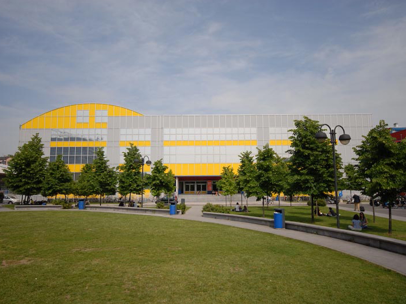

After high school I decided to study engineering even if I still don't know the reason of my choice.
I came in Milan and I frequented for two years Electric Engineering at Politecnico,
after this time I understood that it wasn't my way, so I stopped my studies.
Now I'm still studying at Politecnico di Milano, but in the course of Comunication Design
and I'm really happy because I have finally found something I care.
